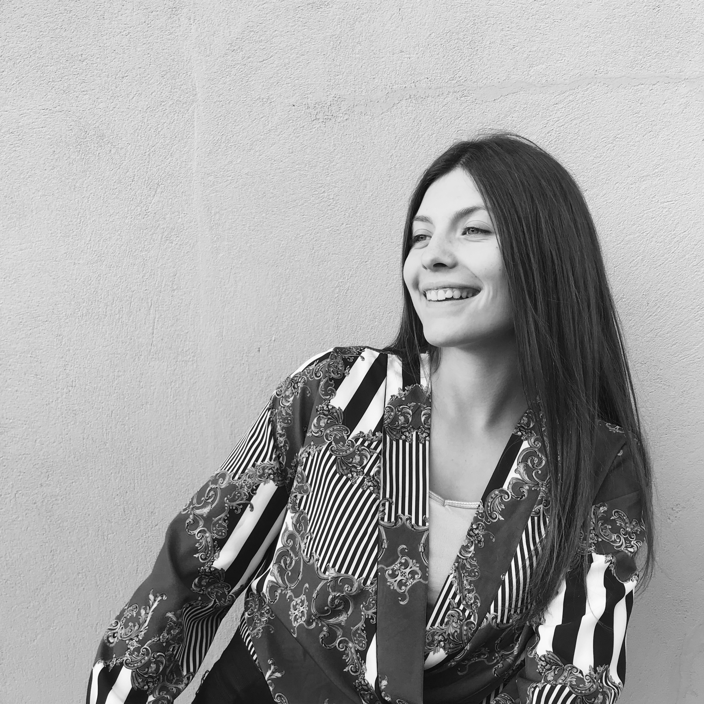

LORANE HELLY
Je n'ai pas peur du challenge, c'est ce qui m'anime le plus dans ce métier de graphiste.
Grâce à ma passion et mon ambition je peux construire des choses à partir de zéro ou simplement les rendre plus efficaces.
Chaque projet que j'entreprends est une opportunité de mettre à profit ces compétences, de rassembler, d'échanger et d'apprendre. Se surpasser et donner le meilleur de soi-même.
Vous pouvez parcourir la page et découvrir mes créations professionelles.